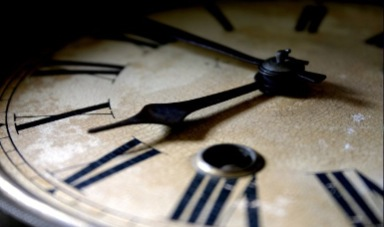
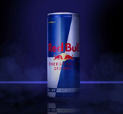
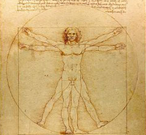
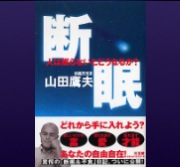

罪状 01
睡眠は人生の浪費
あなたはどれほどの時間を睡眠に捧げてきたでしょうか。 眠っている間は自分の意識で生きているといえますか。 あなたが命を消費して得ている二度と戻らない時間を、みすみす捨ててしまってよいはずがありません。
悪しき睡魔に立ち向かう
不眠運動-ANTI SLEEPING-
現在時刻--:--:--
01不眠の敵THE ENEMY
人を惑わす悪しき睡魔に打ち勝ち、
限りある人生で有意義な活動時間を手にするために。
寝坊して遅刻したこと、眠気で失敗したこと、
居眠りをして怒られたこと...
はっと目覚めたときに襲ってくる焦燥感と自己嫌悪。
わたし達は様々な場面で睡眠に苦しめられています。

罪状 01
あなたはどれほどの時間を睡眠に捧げてきたでしょうか。 眠っている間は自分の意識で生きているといえますか。 あなたが命を消費して得ている二度と戻らない時間を、みすみす捨ててしまってよいはずがありません。
罪状 02
生まれながらにして人間にプログラムされた「眠り」への欲求。 この最大の本能的欲求に打ち勝ってこそ、生きている（起きている）時間に確かな意味を持たせることができるのです。 誇り高い魂を持った人間ならば、肉体の疲労回復などといった目先の快楽に溺れてはいけません。
罪状 03
我々は国家の教育によって睡眠に関する偏った知識を刷り込まれ、眠ることを強制されてきました。 またその一方で眠らないことは悪とされ、不眠は社会から糾弾されています。 あなたは、世間に言われたとおりに眠り続けて良いのでしょうか。 思考停止して騙されてはいけません。今こそ覚醒のときです。
睡眠被害 算定器
※ 1日8時間睡眠として算定
あなたが既に睡眠に奪われた時間
10年0ヶ月
約 3,653 日 ― 二度と戻りません。
すでにおわかりのように、
睡眠とは憎むべき悪そのものです。
ぐっすり気持ちよく眠りたい... 卑しくも根強いこの欲望は、
いつかあなたの身を滅ぼすことでしょう。
我々は睡眠に打ち克ち、
真に人間らしい生活を取り戻すべきなのです。
02不眠宣言THE DECLARATION
自分自身の為に不眠を誓い、社会のために不眠を啓蒙すること、それが不眠宣言です。
下記の崇高なる目標を達成することにもつながります。
第一条
世の中から悪しき睡魔を追い払う為には、人々の意識を変革しなければなりません。 不眠こそ我々があるべき姿であることに気付かせるのです。 一致団結して立ち向かえば眠りを倒すことなど容易なこと。 インターネットを通して不眠を宣言し、眠らないことが持つ意味、そしてその崇高さを皆に説きましょう。
第二条
不眠運動の目的は単に眠らないことではありません。 眠らずに得た時間を有効に活用し、人生をより有意義なものとすることです。 眠らないことで心身を削ってしまっては本末転倒です。あなたが不眠を心から楽しめば、より濃密で価値ある時間を過ごすことができるでしょう。
03不眠の手引きTHE ARSENAL
眠らない為の情報・モノをあなたに。


自然界には極限まで眠りを押さえた生き物が沢山います。例として、イルカは脳の半分のみを睡眠に当て、もう半分で活動を続ける「半球睡眠」ができます。これは見習うべきでしょう。明日から実践して下さい。
調べる→